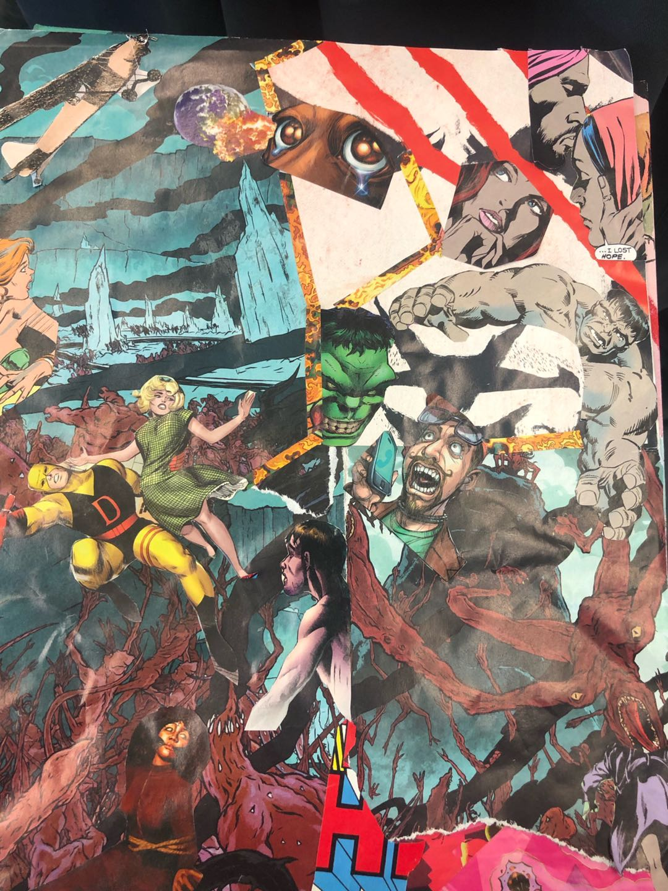
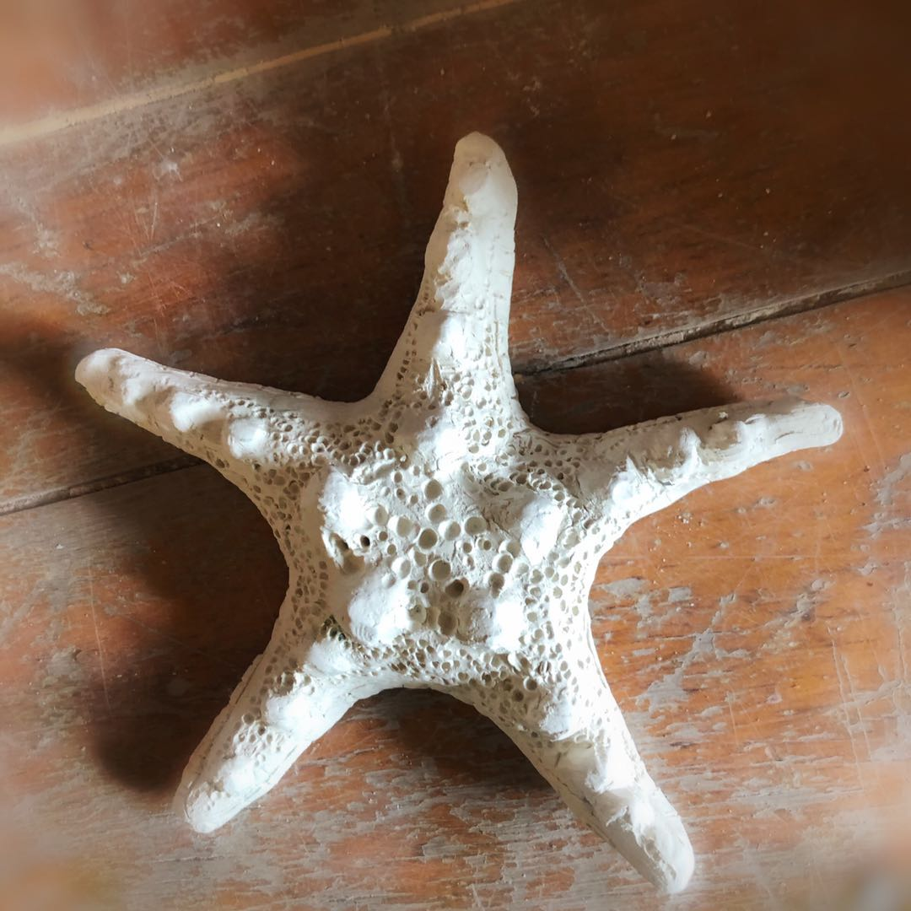
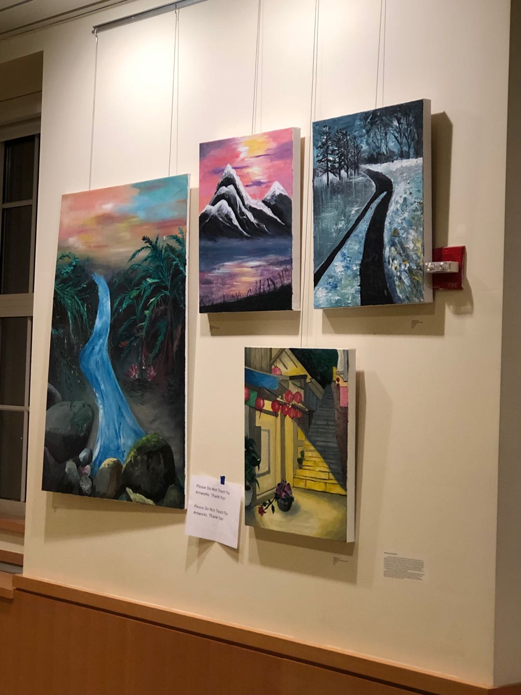

Destruction of the World
This is an 11 by 14 collage. The imagery inspiration comes from the fantasy of the world, the destruction of the non-human species, the women victims, the shocking moment of mankind, the leaving of the family or lovers, the chaos, and the saving of the superheroes.I used dislocation where objects are placed where they shouldn't be, for example, the depression of the dog, the men dial the phone for help, the superhero saving the girls, as well as the men looking out the chaos scenes with a shocking emotion. I also used transformation. The women's head on the far-right corner got cut off and tried to flee away from the monster. On the other hand, I tried to create tensions and movements in this piece. The color pink represents something romantic or memory of the family or lovers. The color dark blue emphasizes the sadness and scared. Lastly, the red helps create tension.
Photomontage

Starfish in Clay
Spring 2019 BFA Open Studios Show
I love to travel. I created a series of painting based on the places that I have been to either from my imagination or based on still-life. For instances, I captured and painted a scene at the street corner of a small town called Phoenix City, located in the western Hunan province, China. The winter scenes of roads, trees, in Yosemite National Park, California that I visited last summer from a still-life. The rugged mountains scene with amongst cloud and sunset from still-life in in Death Valley, California. Also, the waterfall cascades, rocky hill, and rocks painted based on my imagination. I believe every landscape has its own beauty and people sometimes hardly noticed it in the fast-paced city. Landscape appearance changes at every moment and the surrounding atmosphere can always give subjects their true value!These are all acrylics paintings. I painted using different size of brushes as well as pallet-knife.
50 Objects Art Project